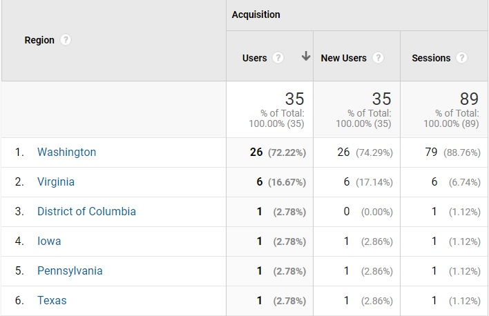
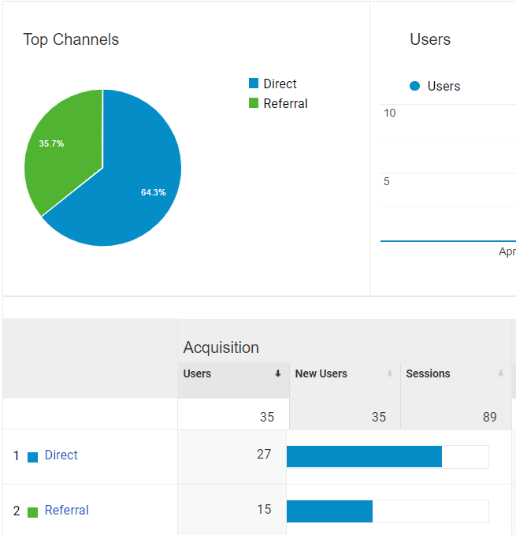
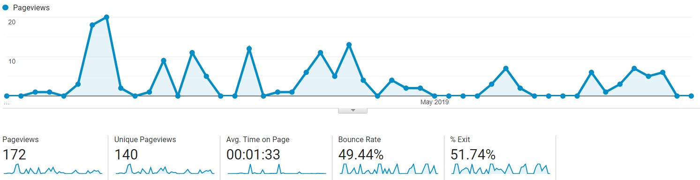

Intro
In order to acclimate myself to Google Analytics, I’ve decided to track data on this user science journal. Google Analytics is a powerful tool that allows us as developers to track key metrics regarding website traffic and user information. We are then able to leverage that data to either make impactful decisions to our website or other business-related choices. I specifically chose this user science journal for this analytics research topic because it is a multi-page website that should in theory have a steady flow of traffic as it is shared in our class.
Set Up
In order to track analytics on this user science journal, I followed the instructions detailed in this page. Basically, as soon as you are finished signing up for Google Analytics as well as registering your chosen site, you are given a pre-made script that should be inserted after the “head” tag in (all) your HTML pages. Since I started this journal in early April 2019, Google Analytics have collected a little over a month and half of data.
In order to stack up my knowledge of my user base for my user science journal I will be making the following assumptions:
- All of the users who visit my page are from Washington State.
- 75% of page visitors came from a referral through Seattle University’s Canvas portal.
- The overall bounce rate for this website is around 50 percent given that user’s will only be interested in the current week’s topic and referrals would link a specific post.
- The average time on page will be less than 30 seconds (I don’t expect most visitors to stay long enough to read the entire article.
Test 1: Where Are My Visitors From?
I was almost correct in my assumption that all my traffic came from people who reside in the state of Washington. Washington State accounted for 26 of 35 users, claiming 72.22% of my user base as well as 88.76% of all sessions. What is peculiar to me is that Iowa, Pennsylvania, and Texas, and even the District of Columbia accounted for one user each. Even more peculiar is that Virginia amounts to 16.67% of my user base and 6.74% of all sessions.
As far as I know, the awareness out there regarding my journal is limited to Seattle University’s WATS program which is comprised of Washington State residents in the Seattle area as well as surrounding cities. I’m not sure how to explain these instances of users outside of Washington State other than someone was able to find the direct link through my through my Github page or a classmate happened to be browsing my journal while out of state. In the end my initial assumption while almost true, was ultimately wrong. Perhaps this says more about how things can be seen from anywhere in the world.
 Lots of users from Washington State but why are there users from Virginia, D.C., Iowa, Pennsylvania, and Texas looking at my journal?Test 2: How Did People Get Here?
Almost the inverse of my assumption is true here. I had guessed that 75% of users would come through Canvas but it turns out that 64.3% of users (27) come from direct as opposed to the 35.7% (15) of users who clicked on a link to get to my page. It turns out my referrals came through Canvas and my Github page. Almost half of the direct views came from the index page. I have to assume here that people either referred to my page in their address bar and was able to navigate to my page through the browser remembering my page URL or clicking a link to my page that was provided through email as Canvas also creates an email notification that contains the same message. So far, Google Analytics is showing me that my perceptions are incorrect.
 The split is almost 2/3 in favor of direct and 1/3 in favor of referralTest 3 & 4: Bounce Rates and Average Time on Page
Finally got one! It makes sense for this page to have a bounce rate of almost half. At 49.44%, it puts me in line with my initial assumption. As our class has weekly topics that are brought forth through weekly journal entries, I don’t expect most of the users to refer to previous entries and if they do, it’s most likely that they started on the index and navigated to the topic of the week. Although, developers typically want a low bounce rate, I’m happy with my bounce rate. It tells me that half of the sessions include at least one interaction on a small scale website.
 Bounce Rate: 49.44% & Average Time on Page: 1 minute and 33 secondsI figured that most people who would read my article would skim through it leading to a low average of 30 seconds (this is being generous). It turns out that users on average spend 1 minute and 33 seconds. My lowball guess was due in part of the content as they are not full on research papers by no means. I would classify my weekly posts as a short and sweet introduction into that week’s topic. I even timed myself reading through Post 6 and I clocked in just shy of under 30 seconds. It turns out people are digesting my musings more than I give them credit for. Thanks guys!
Conclusion
There are a lot of metrics to unpack in Google Analytics, but this brief review of my own website gave me a lot of perspective of who is visiting my page and what they are doing. I may not have assumed correctly, in fact only one of my assumption were correct, but I now know that:
- While most of the users come from Washington State, I still have a few outliers out there in other states/territories.
- A lot of my traffic is direct, there is a good chance that users refer to my websites from their browsers remembering my URL.
- My bounce rate is 50/50, I would consider this a success or passing metric.
- Users are spending more time on my website than I would my own.